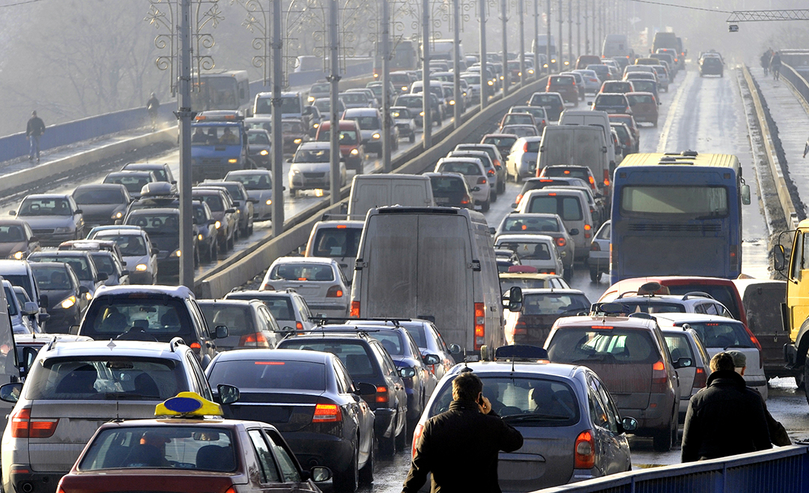
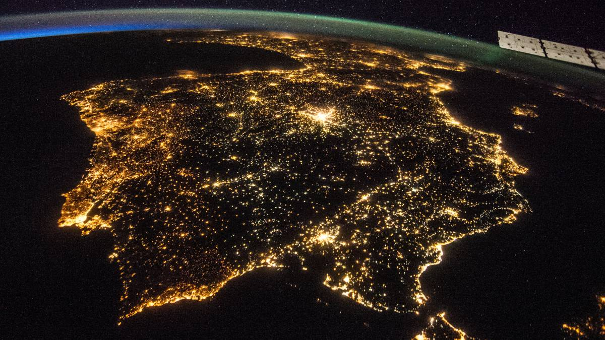
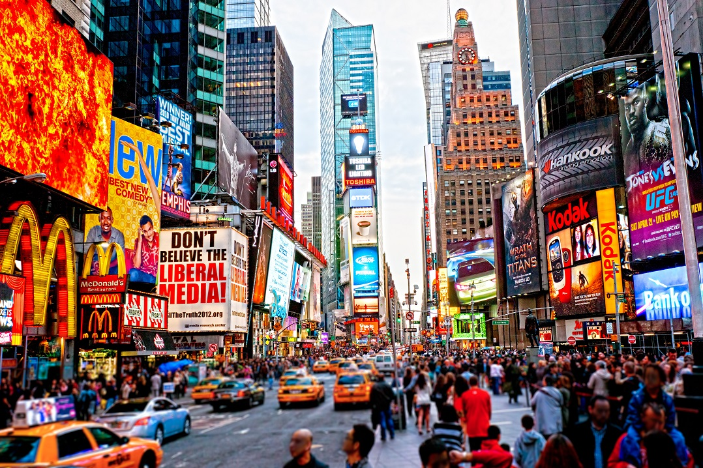
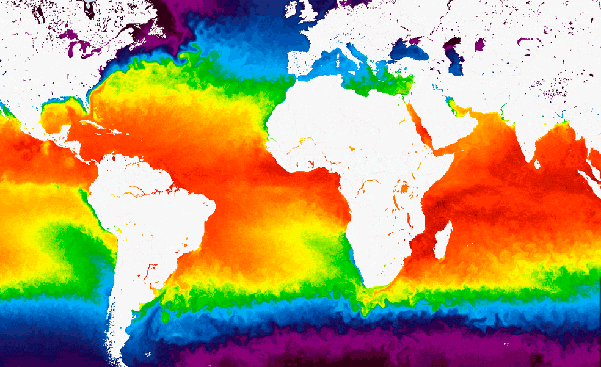

-

Contaminación hídrica.
Se le llama contaminación hídrica a cualquier factor que afecte el estado natural de cualquier cuerpo de agua, ya sean ríos, estanques, esteros, pantanos, lagos, lagunas, mares y océanos.
Algunos de estos factores pueden ser objetos plásticos, textiles, comestibles, desechos de construcción, desechos químicos, bebidas, productos de aseo y metales, que en muchos casos afectan de manera visual, otorgando y saturando el entorno con elementos poco Estéticos y que además liberan a su vez sus propios desechos, los cuales alteran la composición natural del agua, dotándola de proteínas y elementos químicos que sobresaturen el entorno Haciéndolo tóxico para algunas especies de seres vivos.
-

Contaminación del suelo.
Se le llama contaminación del suelo a cualquier factor que afecte el estado natural de la tierra.
Algunos de estos factores pueden ser objetos plásticos, textiles, comestibles, desechos de construcción, desechos químicos y en general desechos inorgánicos, que no solo generan contaminación visual, también liberan desechos químicos que no solo contaminan él aire y el agua si no también la misma tierra, la cual actúa como filtro natural para las aguas contaminadas Y las plantas que en ella crecen.
-

Contaminación acústica.
La contaminación acústica es el exceso de un sonido o vibración distorsionado, a un gran volumen, o varios de estos entremezclados, provocando molestias, sordera, desorden, desorientación, malestares corporales e incluso desorientación que hacen daño a los seres vivos presentes en dicha área.
En ambientes urbanos este tipo de contaminación puede ser producido por el sonido de los vehículos, teléfonos, relojes, parlantes, metros subterráneos, etc.
-

Contaminación lumínica.
La contaminación lumínica se hace notoria principalmente en la oscuridad que es producida por la noche, y se refiere al uso inadecuado, innecesario y exagerado de luces artificiales, que en algunos casos parpadean demasiado, iluminan en exceso, con colores muy saturados o que se agitan de manera descontrolada, aturdiendo, desorientando o limitando la visión e incluso causando mareos y dolores de cabeza a quien se exponga a ellas por mucho tiempo.
-

Contaminación visual.
La contaminación visual es aquel exceso de elementos que discuerdan con la naturaleza del entorno y que impactan sobre la visión, la calidad del entorno y en algunos casos la capacidad mental humana.
Algunos ejemplos de esto pueden ser, el exceso de pósteres, banners y anuncios en una calle, el exceso de elementos en un determinado espacio y que discuerdan con este.
-

Contaminación térmica.
La contaminación térmica es el aumento de temperatura excesivo y producido por el ser humano, que afecta principalmente el agua.
La principal causa de contaminación térmica por este factor son las plantas industriales y manufactureras. Estas plantas obtienen el agua de fuentes cercanas para evitar el calentamiento excesivo de sus máquinas, que luego vierten nuevamente a esta fuente pero a una temperatura mayor.
Pero otros factores que pueden provocar o acelerar este tipo de contaminación es el calor producido por máquinas de uso industrial, doméstico y también la mayoría de los vehículos. Además de la tala excesiva, que impide al planeta hacer frente a dicha afectación.
El medioambiente o entorno natural es el conjunto de componentes físicos, químicos, y biológicos externos con los que interactúan los seres vivos que allí habitan.
como lo cuido?
Ya que el medioambiente es todo aquello que nos rodea, que de él extraemos los recursos de uso necesario para nuestra existencia y que no solo es habitado por el ser humano, es importante comprender que debemos tener algunos cuidados que nos ayuden a preservar su estado natural lo más posible.
Para aportar tu granito de arena a dicha preservación puedes seguir algunas de estas recomendaciones:
Se consiente
-
mientras uses un producto, piensa:
- ¿Cómo fue producido este?
- ¿Cómo podría contaminar?
- ¿Existe alguna alternativa más saludable?
Haz la diferencia
-
ahora que ya lo analizamos:
- ¡Identifica su material, y recíclalo debidamente!
- ¡Si lo puedes reutilizar, hazlo!